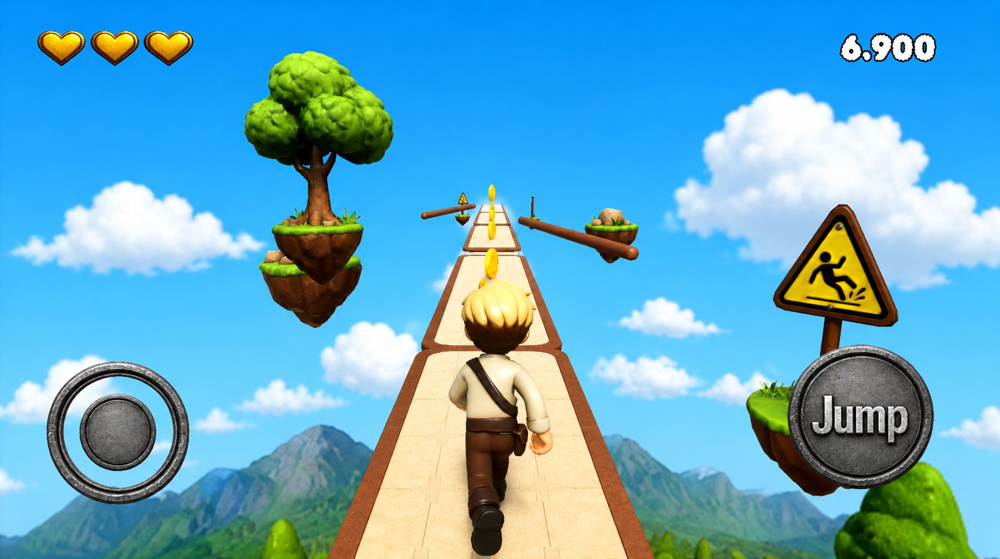
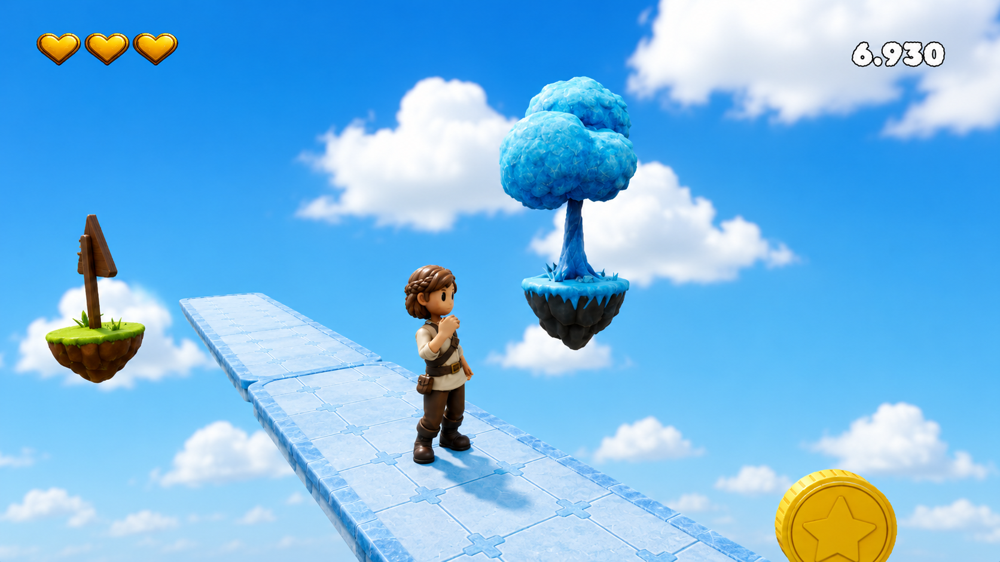
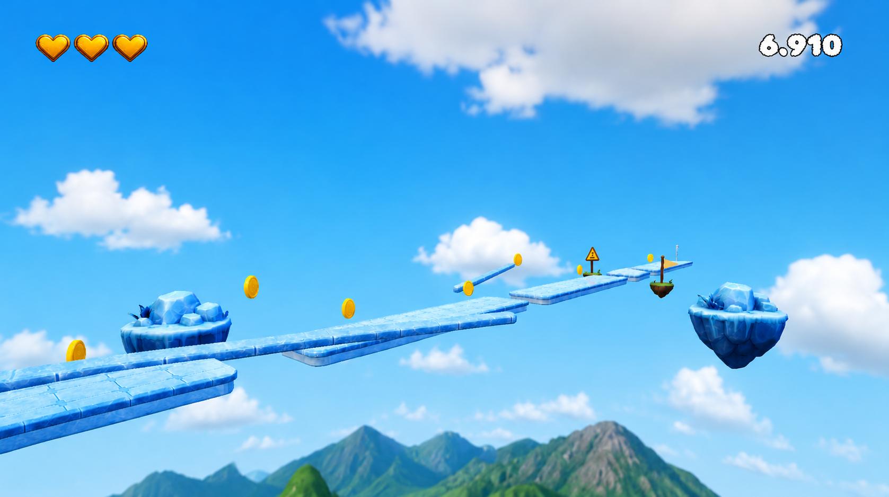

Run, Jump, Reach the Finish · Publishing in Progress

A virtual joystick bottom-left, a jump button bottom-right. A three-heart health system top-left and real-time score tracking top-right. The third-person camera keeps the character's movement clearly readable.

Every 3D asset — the character model, the ice trees, the signposts — was built from scratch. The cold blue-ice palette contrasts with warm brown character tones to give the scene depth.

A parkour route that hops between ice platforms floating above the clouds. Gold coins, warning signs and flag-marked checkpoints give every level its own rhythm.